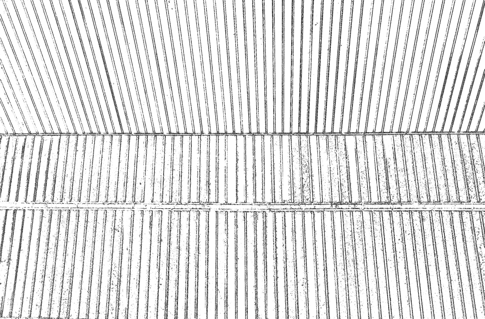
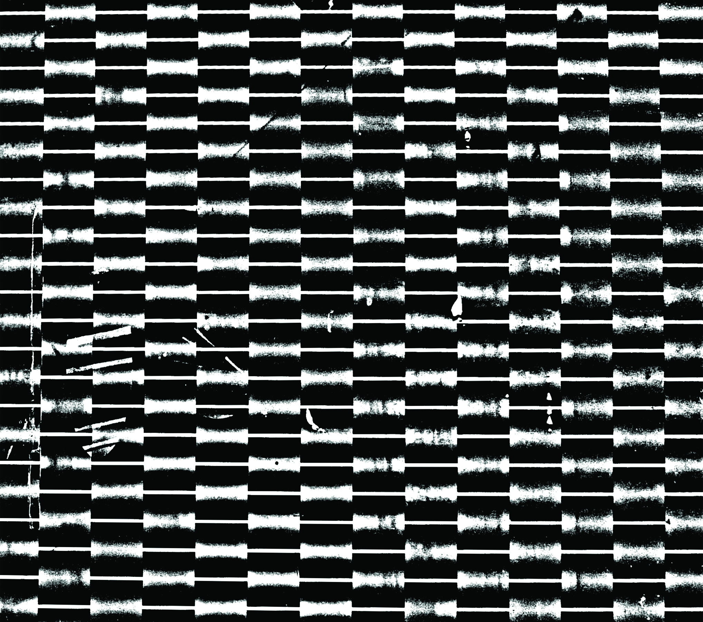
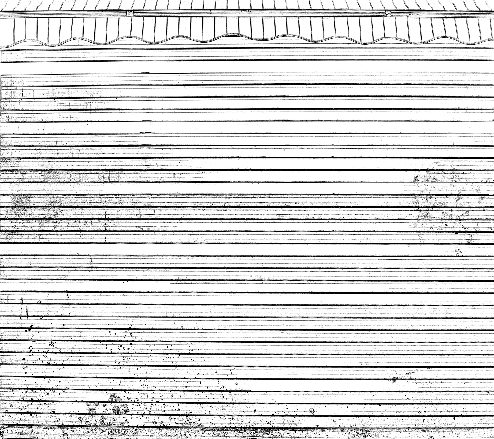
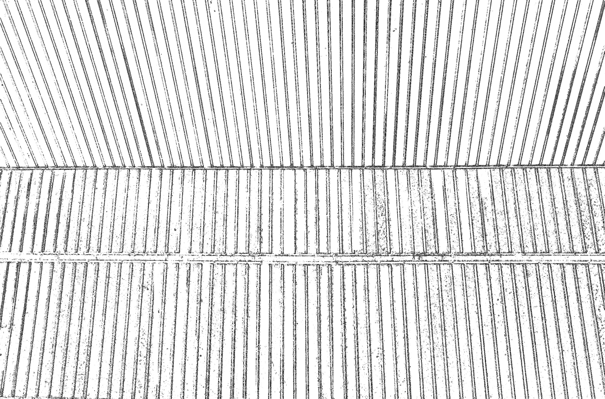
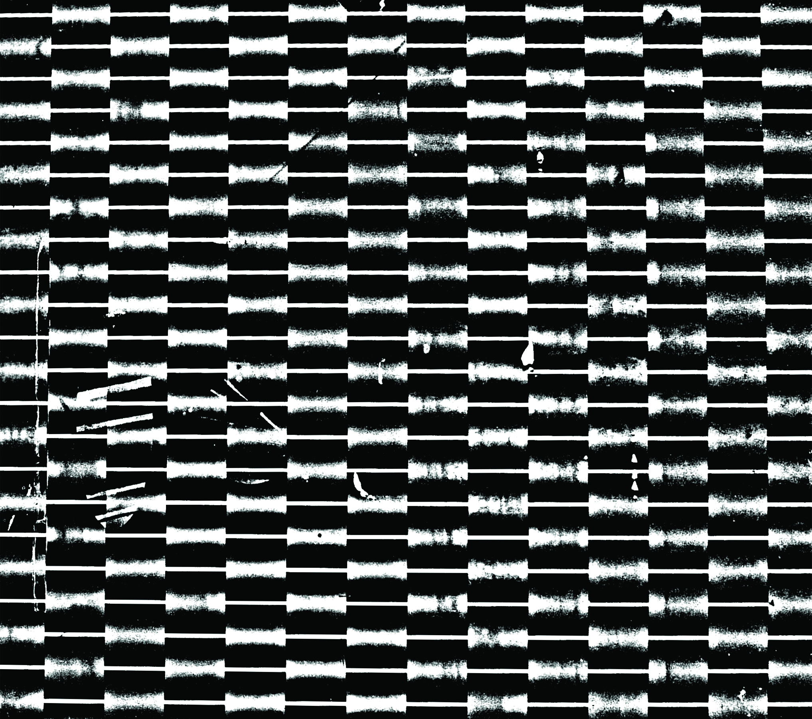
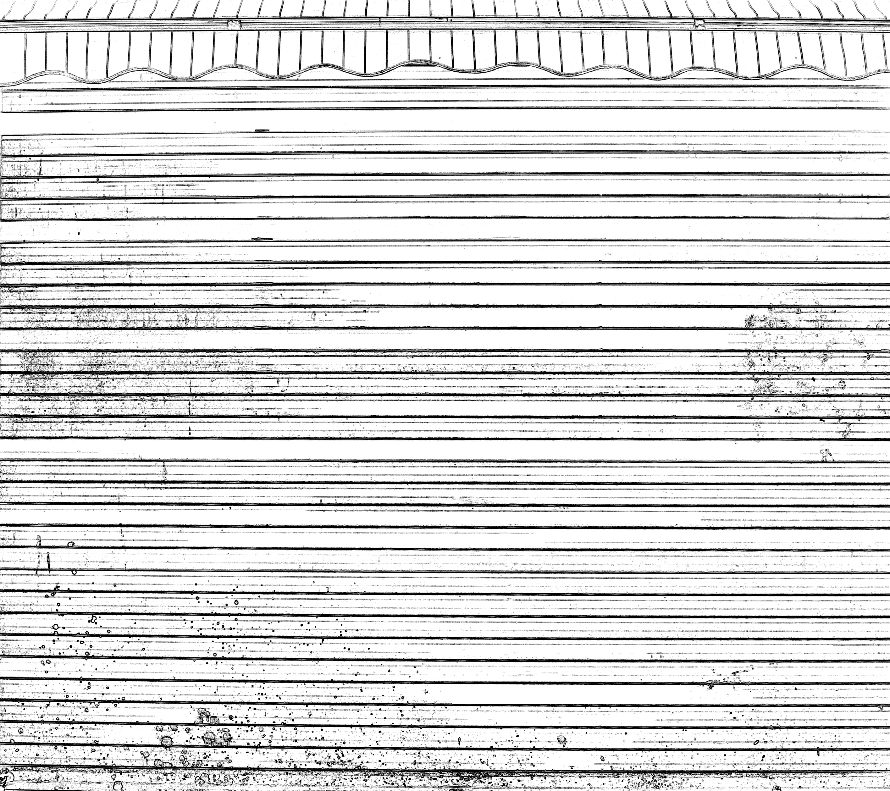
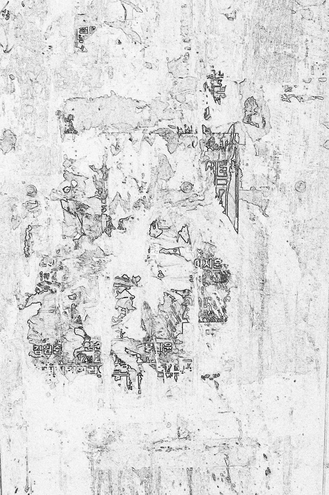
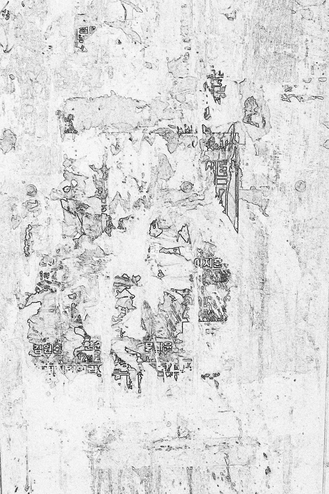

Sewoon Sangga is a residential and commercial complex located at 159 Cheonggyecheonro (Jangsa -dong), Jongno-gu, Seoul. It is the first residential-commercial apartment complex in Korea as it is the name of a group of residential and commercial complexes connecting Jongno 3ga and Toegyero 3ga. It was built in 1966, in what The Hankyoreh described in an editorial as "a symbol of the indiscriminate redevelopment that occurred during the dictatorship years". Since its outdated, there were several redevelopment plans about this shopping area. In 2006, Jung-gu suggested a plan to build a megatall skyscraper with the height of 960m and 220-storied, known as Tour Financial Hub Center, but due to the height restriction of Seoul central, the project was abandoned. In July 2008, in the August issue of , an article covering the memories of Sewoon Shopping Street, which will soon disappear, was published.
Sewoon Sangga is a residential and commercial complex located at 159 Cheonggyecheonro (Jangsa -dong), Jongno-gu, Seoul. It is the first residential-commercial apartment complex in Korea as it is the name of a group of residential and commercial complexes connecting Jongno 3ga and Toegyero 3ga. It was built in 1966, in what The Hankyoreh described in an editorial as "a symbol of the indiscriminate redevelopment that occurred during the dictatorship years". Since its outdated, there were several redevelopment plans about this shopping area. In 2006, Jung-gu suggested a plan to build a megatall skyscraper with the height of 960m and 220-storied, known as Tour Financial Hub Center, but due to the height restriction of Seoul central, the project was abandoned. In July 2008, in the August issue of
Standing On Their Own is the second exhibition in an art project by six artists, taking place at “4tk004,” a space located on the 4th floor of Sewoon Sang-ga (arcade).
Standing On Their Own, will be carried out on the basis of two major frameworks related to the first exhibition by Buhm Hong: ‘memory,’ in terms of content, and ‘emptying,’ in terms of form. While the memories Hong placed in his works in A Window of Mine were extremely ‘personal memories,’ I link them to Sewoon Sang-ga (arcade) to create ‘public memories.’ I document the walls of the Sewoon Sang-ga building, which carry the many layers of time since it was built four decades ago. The walls reveal traces of the weight they have borne as they stood on their own. These seem ordinary at first, but could in fact be the memories of some, or the events of some, who have stayed with Sewoon Sang-ga for two, three or four decades, or have passed through it at a certain point in time.
I reveal the traces –i.e., memories-through the process of photographing the diverse walls in Sewoon Sang-ga, and removing the colors from them using photoshop. The process could allow this to be called a ‘digital rubbing’ print. In terms of form, while artist Buhm Hong filled the entire space to create a storefront view, I will physically empty it, so it can function as a small exhibition space where people come in to view the works.
Standing On Their Own is the second exhibition in an art project by six artists, taking place at “4tk004,” a space located on the 4th floor of Sewoon Sang-ga (arcade).
Standing On Their Own, will be carried out on the basis of two major frameworks related to the first exhibition by Buhm Hong: ‘memory,’ in terms of content, and ‘emptying,’ in terms of form. While the memories Hong placed in his works in A Window of Mine were extremely ‘personal memories,’ I link them to Sewoon Sang-ga (arcade) to create ‘public memories.’ I document the walls of the Sewoon Sang-ga building, which carry the many layers of time since it was built four decades ago. The walls reveal traces of the weight they have borne as they stood on their own. These seem ordinary at first, but could in fact be the memories of some, or the events of some, who have stayed with Sewoon Sang-ga for two, three or four decades, or have passed through it at a certain point in time.
I reveal the traces –i.e., memories-through the process of photographing the diverse walls in Sewoon Sang-ga, and removing the colors from them using photoshop. The process could allow this to be called a ‘digital rubbing’ print. In terms of form, while artist Buhm Hong filled the entire space to create a storefront view, I will physically empty it, so it can function as a small exhibition space where people come in to view the works.


 







 
